Definition of Pressure and Its Units
الـ Pressure هو الضغط، وبيعبر عن مقدار القوة العمودية (Normal Force) المؤثرة على وحدة المساحة.
- \(P\) = Pressure
- \(F\) = Normal force acting on the surface
- \(A\) = Area over which the force acts
يعني لو عندك قوة معينة بتأثر على مساحة صغيرة، الضغط هيكون أكبر من نفس القوة لو بتأثر على مساحة أكبر. من العلاقة:
بشرط إن القوة تفضل ثابتة، لما المساحة تقل، الضغط يزيد، ولما المساحة تزيد، الضغط يقل.
لو أثرت نفس القوة على مساحة صغيرة ومساحة كبيرة، الضغط على المساحة الصغيرة هيكون أكبر.
Units of Pressure
وحدة الضغط في النظام الدولي (SI Unit) هي الـ Pascal (Pa). يعني الضغط يساوي 1 باسكال لما قوة مقدارها 1 نيوتن تؤثر عموديًا على مساحة 1 م².
فيه وحدات تانية مهمة لقياس الضغط:
- Pascal (Pa)
- Kilopascal (kPa)
- Bar
- Atmosphere (atm)
- Millimeter of Mercury (mmHg)
- Torr
- Pounds per Square Inch (psi)
Important Conversions
| Conversion | Value |
|---|---|
| 1 bar | = 105 Pa |
| 1 bar | = 100 kPa |
| 1 atm | = 101325 Pa |
| 1 atm | = 101.325 kPa |
| 1 atm | ≈ 1.01325 bar |
| 1 atm | = 760 mmHg = 760 torr |
| 1 bar | ≈ 14.5 psi |
خلي بالك إن الـ bar والـ atm وحدتين مختلفتين، حتى لو قيمتهم قريبة من بعض. في المسائل، لازم تستخدم التحويل الصحيح حسب الوحدة المطلوبة.
Pascal (Pa).
الضغط هو القوة العمودية مقسومة على المساحة اللي بتأثر عليها.
Pressure increases.
لأن \(P\propto 1/A\) عند ثبات القوة، فلما المساحة تقل الضغط بيزيد.
Pressure Terminology
عشان نفهم أجهزة قياس الضغط، لازم نفرّق بين أنواع الضغط المختلفة؛ لأن كل نوع بيعبر عن حاجة مختلفة.
2.1 Atmospheric Pressure
Atmospheric Pressure هو الضغط الناتج عن وزن الهواء الموجود في الغلاف الجوي (Atmosphere) والمؤثر على الأجسام والأسطح. الضغط الجوي بيتغير من مكان للتاني، وممكن يتغير مع الارتفاع عن سطح البحر والظروف الجوية.
القيمة القياسية الشائعة للضغط الجوي:
دي قيمة قياسية مرجعية، مش معناها إن الضغط الجوي لازم يكون نفس القيمة في كل مكان وكل وقت.
2.2 Absolute Pressure
الـ Absolute Pressure هو الضغط المقاس بالنسبة إلى الفراغ التام (Perfect Vacuum)، اللي ضغطه يساوي صفرًا مطلقًا. يعني بنعتبر الـ Absolute Zero Pressure هو نقطة البداية للقياس.
2.3 Gauge Pressure
أغلب أجهزة قياس الضغط الشائعة، زي الـ Pressure Gauge، بتعرض الضغط بالنسبة إلى الضغط الجوي، مش بالنسبة إلى الفراغ التام.
العلاقة الأساسية:
- \(P_{abs}\) = Absolute Pressure
- \(P_{atm}\) = Atmospheric Pressure
- \(P_g\) = Gauge Pressure
إذن:
لو ضغط النظام أكبر من الضغط الجوي، بيكون الـ Gauge Pressure موجبًا. ولو ضغط النظام أقل من الضغط الجوي، ممكن تكون قراءة الـ Gauge Pressure سالبة، وده بيعبّر عن حالة Vacuum relative to atmospheric pressure.
- Given: \(P_{abs}=200\ \text{kPa}\), \(P_{atm}=100\ \text{kPa}\).
- Required: \(P_g\).
- Governing equation: \(P_g=P_{abs}-P_{atm}\)
- Solution: \(P_g=200-100=100\ \text{kPa}\)
- Given: \(P_g=50\ \text{kPa}\), \(P_{atm}=100\ \text{kPa}\).
- Required: \(P_{abs}\).
- Governing equation: \(P_{abs}=P_{atm}+P_g\)
- Solution: \(P_{abs}=100+50=150\ \text{kPa}\)
2.4 Vacuum Pressure
الـ Vacuum Pressure بيعبّر عن مقدار انخفاض الضغط عن الضغط الجوي.
في حالة الضغط الأقل من الضغط الجوي، ممكن نعبّر عن مقدار الـ Vacuum بالعلاقة:
وده بيكون مقدارًا موجبًا لو الضغط المطلق أقل من الضغط الجوي.
ما تخلطش بين الـ Absolute Pressure والـ Gauge Pressure والـ Vacuum Pressure؛ لأن كل واحد فيهم له مرجع مختلف.
2.5 Differential Pressure
الـ Differential Pressure مش لازم يعبّر عن الضغط المطلق عند أي نقطة؛ هو بيعبّر عن الفرق بين الضغطين.
حيث \(P_1\) هو الضغط عند النقطة الأولى، و\(P_2\) هو الضغط عند النقطة الثانية. وده مهم في أجهزة قياس الضغط التفاضلي (Differential Pressure Instruments)، ومنها الـ Differential Manometer. لو عارف الضغط عند نقطة والفرق بين الضغطين، تقدر تحسب الضغط عند النقطة التانية.
- Given: \(P_1=150\ \text{kPa}\), \(P_1-P_2=40\ \text{kPa}\).
- Required: \(P_2\).
- Governing equation: \(\Delta P=P_1-P_2\ \Rightarrow\ P_2=P_1-\Delta P\)
- Solution: \(P_2=150-40=110\ \text{kPa}\)
لكن لو مش عارف أي ضغط من الضغطين ولا عندك معلومة إضافية، مجرد معرفة إن الجهاز بيقيس فرق الضغط مش كفاية لتحديد كل ضغط بصورة منفصلة.
2.6 Standard Temperature and Pressure (STP)
STP اختصار لـ Standard Temperature and Pressure، أي درجة الحرارة والضغط القياسيان.
في التعريف التقليدي الشائع في مسائل الغازات:
لكن خلي بالك: بعض المراجع بتستخدم تعريفات قياسية مختلفة حسب السياق. لذلك في أي مسألة، اعتمد على التعريف اللي محدده السؤال أو المرجع المستخدم في المقرر.
Gravitational Methods of Pressure Measurement
فيه طرق مختلفة لقياس الضغط، ومن الطرق الأساسية Gravitational Methods، وهي طرق بتعتمد على تأثير الجاذبية ووزن عمود من سائل. الفكرة الأساسية إن وزن السائل الموجود في عمود ارتفاعه معين بيولّد فرق ضغط بين مستويين.
العلاقة الأساسية لضغط عمود سائل:
- \(P\) = Pressure due to the liquid column
- \(\rho\) = Density of the liquid
- \(g\) = Acceleration due to gravity
- \(h\) = Vertical height of the liquid column
العلاقة دي مهمة جدًا؛ لأنها بتربط الضغط بكثافة السائل وارتفاعه. من المعادلة، عند ثبات \(g\):
يعني الضغط بيتناسب طرديًا مع كثافة السائل وارتفاع العمود الرأسي. لو كثافة السائل زادت، فالضغط الناتج عن نفس الارتفاع يزيد. ولو الارتفاع زاد مع ثبات الكثافة، فالضغط يزيد برضه.
ومن هنا نفهم ليه اختيار السائل المستخدم في أجهزة قياس الضغط مهم، وليه كثافة السائل بتأثر على ارتفاع العمود المطلوب.
Barometer
Definition and Working Principle
الـ Barometer هو جهاز بيُستخدم لقياس Atmospheric Pressure. أحد الأنواع المعروفة هو الـ Mercury Barometer، اللي بيعتمد على عمود من الزئبق (Mercury) داخل أنبوبة مناسبة.
الفكرة الأساسية كالتالي:
- بنستخدم أنبوبة مملوءة بالزئبق.
- بنقلب الأنبوبة داخل وعاء يحتوي على الزئبق.
- بنسمح للزئبق داخل الأنبوبة إنه يستقر عند ارتفاع معين.
- بيتكوّن فراغ تقريبًا أعلى عمود الزئبق، وده معروف باسم Torricellian Vacuum.
- الضغط الجوي المؤثر على سطح الزئبق في الوعاء بيساعد على موازنة وزن عمود الزئبق داخل الأنبوبة.
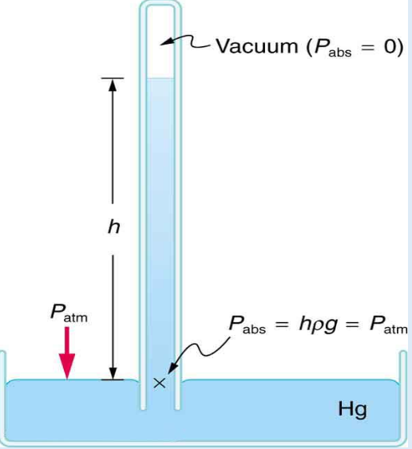
A mercury-filled tube is inverted into a reservoir of mercury (Hg). The space above the column is a vacuum (Pabs = 0). The atmospheric pressure Patm acts on the reservoir surface, and at the base of the column Pabs = hρg = Patm.
في الرسم: فوق عمود الزئبق فراغ (Vacuum) ضغطه المطلق صفر، و\(P_{atm}\) بتضغط على سطح الزئبق في الوعاء. عند مستوى سطح الزئبق في الوعاء، الضغط الناتج عن عمود الزئبق \(h\rho g\) بيساوي الضغط الجوي.
عند الاتزان، يكون الضغط الجوي مساويًا للضغط الناتج عن عمود الزئبق:
- \(\rho_{Hg}\) = Density of mercury
- \(g\) = Acceleration due to gravity
- \(h\) = Vertical height of the mercury column
في الظروف القياسية المعتادة، ارتفاع عمود الزئبق بيكون تقريبًا:
وبالتالي:
الـ \(76\ \text{cm}\) هنا هو Vertical Height لعمود الزئبق، مش طول الأنبوبة بالكامل.
Why Is Mercury Used?
اختيار الزئبق (Mercury) مرتبط بكثافته العالية. من العلاقة \(P=\rho g h\)، لو الضغط ثابت، يبقى:
يعني كل ما كثافة السائل تزيد، الارتفاع المطلوب لمعادلة نفس الضغط يقل. الزئبق كثافته عالية مقارنة بالماء؛ لذلك يقدر يوازن الضغط الجوي بعمود ارتفاعه حوالي \(76\ \text{cm}\)، بينما استخدام سائل أقل كثافة، زي الماء، يتطلب عمودًا أعلى بكثير لنفس الضغط. إذن اختيار الزئبق بيساعد على تقليل ارتفاع العمود المطلوب، وده بيخلي الجهاز أكثر عملية في التصميم.
Barometer Applications
من استخدامات قياس الضغط الجوي متابعة التغيرات في الضغط الجوي، وده ممكن يساعد في فهم تغيرات الطقس. الضغط الجوي بيتغير من مكان لمكان، وبيتأثر بالارتفاع عن سطح البحر والظروف الجوية. والتغيرات في الضغط الجوي ممكن تكون من المؤشرات المستخدمة في التنبؤ بالطقس، لكنها مش العامل الوحيد.
Atmospheric pressure.
It balances atmospheric pressure against the hydrostatic pressure of a mercury column.
يعني الضغط الجوي بيشيل عمود الزئبق، فعند الاتزان الاتنين بيتساووا.
Because mercury has a much higher density, so a much shorter liquid column is required to balance atmospheric pressure.
الماء كثافته أقل بكتير، فهيحتاج عمود أعلى بكتير لنفس الضغط.
من العلاقة، \(h\) بتتناسب عكسيًا مع \(\rho\)، فلما الكثافة تقل الارتفاع المطلوب يزيد.
Manometer
Definition
الـ Manometer هو جهاز بيُستخدم لقياس الضغط أو فرق الضغط عن طريق عمود من سائل (Manometric Fluid). من الأجهزة اللي بتعتمد على العلاقة بين الضغط وارتفاع عمود السائل، وبيكون مهم في قياس الضغط عند نقطة أو فرق الضغط بين نقطتين حسب نوع الجهاز وطريقة توصيله.
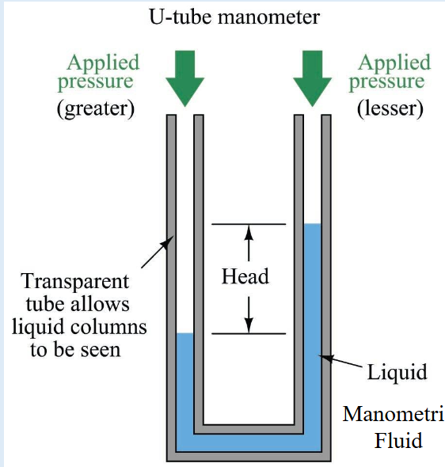
Transparent tubes let the liquid columns be seen. The greater applied pressure pushes its liquid column down and the lesser applied pressure side rises; the level difference is the Head.
الأنبوبة الشفافة بتخلينا نشوف مستويات السائل. الجانب اللي عليه ضغط أكبر (greater) مستوى السائل فيه بينزل، والجانب اللي عليه ضغط أقل (lesser) المستوى فيه بيطلع، وفرق المستويين هو الـ Head.
Working Principle
الفكرة الأساسية للـ Manometer هي إن الضغط عند نفس المستوى الأفقي داخل نفس السائل المتصل، في حالة الاتزان الساكن، بيكون متساويًا. كمان فرق الضغط بين مستويين رأسيين داخل سائل ساكن بيعتمد على كثافة السائل وفرق الارتفاع الرأسي.
العلاقة دي تنطبق على فرق الضغط الناتج عن عمود سائل واحد في الحالة المناسبة. أما في الـ Differential Manometer اللي بيحتوي على سائل مانومتري مختلف عن السائل الموجود في الخط أو الوعاء، فالمعادلة بتعتمد على ترتيب السوائل وكثافاتها ومستوياتها.
في الحالة الشائعة لقياس فرق الضغط بين نقطتين باستخدام سائل مانومتري كثافته \(\rho_m\)، وسائل العملية كثافته \(\rho_f\)، يمكن كتابة مقدار فرق الضغط في الصورة المبسطة التالية عندما تنطبق هندسة التوصيل والاتزان المستخدمة:
- \(\Delta P\) = Pressure difference
- \(\rho_m\) = Density of the manometric fluid
- \(\rho_f\) = Density of the fluid in the connecting line
- \(g\) = Acceleration due to gravity
- \(h\) = Relevant vertical level difference
مهم جدًا: المعادلة دي مش قاعدة تُستخدم بنفس الصورة في كل شكل من أشكال الـ Manometer. في المسائل، لازم تحدد اتجاهات الأعمدة ومستويات السوائل وكثافة كل سائل، وبعدها تكتب اتزان الضغط من نقطة للتانية. الإشارة بتتحدد حسب اتجاه الحركة في عمود السائل وحسب أي ضغط أكبر.
استخدم الصورة المبسطة دي بس لما ترتيب السوائل واتزان الضغط يطابقوا الترتيب المفترض.
Differential Manometer
بيكون فيه طرف متصل بالنقطة الأولى وطرف متصل بالنقطة الثانية، والسائل الموجود داخل الجهاز بيتحرك لحد ما يوصل لحالة اتزان.
لو الضغط عند نقطة أكبر من الضغط عند النقطة التانية، فرق الضغط ده بيظهر في اختلاف مستويات السائل داخل الأنبوبة. بالتالي، ارتفاع العمود مش مجرد قراءة شكلية؛ ده جزء من العلاقة اللي بنستخدمها لحساب فرق الضغط.
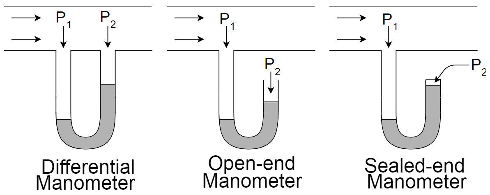
In each schematic the first limb is connected to the pipe pressure P1. Differential: the second limb is connected to P2 in the same pipe. Open-end: the second limb is open, with P2 acting on it. Sealed-end: the second limb is sealed, with P2 marked at the closed end.
الرسم بيقارن ثلاث ترتيبات: الـ Differential Manometer (الطرفين متوصلين بنقطتين \(P_1\) و\(P_2\))، والـ Open-end (طرف مفتوح)، والـ Sealed-end (طرف مقفول). النص المرفق للمحاضرة مش بيشرح الـ Open-end والـ Sealed-end بالتفصيل، فالوصف هنا من الرسم نفسه.
The pressure difference between two points.
Yes, by rearranging the pressure-difference equation. For example:
زي ما عملنا في Example 3 في قسم Pressure Terminology.
No. Additional information is required to determine the individual pressure values.
الفرق لوحده مش بيحدد قيمة كل ضغط؛ محتاجين معلومة إضافية.
Selecting the Manometric Fluid
اختيار الـ Manometric Fluid نقطة مهمة جدًا في تصميم جهاز قياس الضغط، لأن كثافة السائل بتحدد ارتفاع العمود المطلوب لقياس فرق ضغط معين. العلاقة العامة لعمود سائل واحد:
ومنها:
إذن، لو فرق الضغط ثابت:
يعني ارتفاع العمود بيتناسب عكسيًا مع كثافة السائل في الحالة دي.
Case 1: High-Density Manometric Fluid
لو استخدمنا سائل كثافته عالية، هيكون ارتفاع العمود المطلوب أقل لنفس فرق الضغط، في الحالة اللي العلاقة دي بتنطبق عليها. وده ممكن يكون مناسبًا لما يكون فرق الضغط كبيرًا، ونحتاج نقلل ارتفاع عمود السائل.
Case 2: Low-Density Manometric Fluid
لو استخدمنا سائل كثافته أقل، هيكون ارتفاع العمود المطلوب أكبر لنفس فرق الضغط. وده ممكن يساعد على إظهار فروق الضغط الصغيرة على هيئة فروق ارتفاع أكبر، بشرط إن تصميم الجهاز مناسب وإن خواص السائل تسمح بالقياس المطلوب. لكن ارتفاع العمود الكبير جدًا ممكن يكون غير عملي، وبالتالي لازم نختار السائل بناءً على مدى الضغط المتوقع (Expected Pressure Range) وشكل الجهاز وظروف القياس.
Important Design Considerations
اختيار السائل مش معتمد على الكثافة وحدها؛ لازم كمان نراعي ظروف التشغيل وخواص السائل وتوافقه مع المواد المستخدمة. لكن من ناحية علاقة الضغط بالارتفاع، كثافة السائل عامل أساسي.
في المسائل، لو اتغيّرت كثافة السائل، ما ينفعش تفترض إن فرق الضغط هيفضل مرتبط بنفس الارتفاع من غير ما تعيد الحساب.
- Given: \(\Delta P\) constant, \(\rho_{new}=\tfrac{1}{2}\rho_{original}\).
- Governing equation (single liquid column): \(h=\dfrac{\Delta P}{\rho g}\)
- Solution: \(h_{new}=\dfrac{\Delta P}{\tfrac{1}{2}\rho_{original}\,g}=2\cdot\dfrac{\Delta P}{\rho_{original}\,g}=2\,h_{original}\)
A higher density generally gives a smaller required height, while a lower density gives a larger required height.
لأن \(h=\Delta P/\rho g\).
Because the expected pressure difference affects the required column height and therefore the practicality of the instrument.
عمود طويل جدًا يبقى جهاز غير عملي، فلازم نختار السائل على حسب المدى المتوقع للضغط.
The required height increases.
Sources of Error in Manometer Measurements
أي جهاز قياس ممكن يكون فيه أخطاء (Measurement Errors)، والـ Manometer مش استثناء. من الأخطاء المهمة اللي لازم ناخد بالنا منها:
7.1 Parallax Error
عشان نقلل الخطأ ده، لازم تكون العين في مستوى القراءة الصحيح، وتتم قراءة سطح السائل بطريقة مناسبة حسب شكل الأنبوبة والسائل المستخدم. لو قرأت المنسوب من زاوية مختلفة، ممكن تلاحظ ارتفاعًا ظاهريًا مختلفًا عن الارتفاع الحقيقي.
7.2 Tube Alignment
محاذاة الأنبوبة (Tube Alignment) وطريقة وضع الجهاز ممكن تأثر على دقة القراءة. لازم يكون الجهاز مركبًا بالشكل المناسب بالنسبة لاتجاه الجاذبية؛ لأن معادلة الضغط الهيدروستاتيكي بتعتمد على Vertical Height. لو الأنبوبة مائلة، ما ينفعش تستخدم طول السائل على امتداد الأنبوبة مباشرة على إنه الارتفاع الرأسي في معادلة:
لازم تحدد فرق الارتفاع الرأسي الصحيح.
7.3 Effect of Temperature on Density
كثافة السائل (Liquid Density) ممكن تتغير مع درجة الحرارة. وبما إن معادلة الضغط بتعتمد على الكثافة:
فأي تغير في \(\rho\) ممكن يؤثر على القيمة المحسوبة للضغط لو استخدمت كثافة غير مناسبة لدرجة حرارة القياس. عشان كده، في القياسات اللي بتحتاج دقة، لازم تراعي درجة حرارة السائل وتستخدم قيمة كثافة مناسبة لظروف التجربة.
7.4 Random and Systematic Errors
فيه فرق بين نوعين مهمين من الأخطاء:
أخطاء عشوائية ممكن تخلي القراءات تزيد أو تقل من مرة للتانية.
أخطاء منتظمة بتسبب انحرافًا في القراءات في اتجاه أو نمط معين، مثل خطأ ثابت في معايرة الجهاز.
مش كل اختلاف بين قراءتين معناه بالضرورة إن فيه خطأ عشوائي فقط؛ لازم نفكر في ظروف القياس وطريقة تركيب الجهاز ومعايرته.
Reducing Measurement Errors
قبل إجراء التجربة، لازم نتأكد من:
- تركيب الجهاز بصورة صحيحة.
- قراءة مستوى السائل من زاوية مناسبة لتقليل Parallax Error.
- تحديد فرق الارتفاع الرأسي الصحيح.
- مراعاة درجة حرارة السائل عند الحاجة.
- استخدام كثافة مناسبة للسائل.
- فحص الجهاز والتأكد من ملاءمته للقياس المطلوب.
Solving Manometer Problems
في مسائل الـ Manometer، حدد الأول: نقطتين الضغط، وكثافات السوائل، وفروق الارتفاع الرأسية، واتزان الضغط، وبعد كده عوّض بالقيم.
وفي النهاية راجع دايمًا الـ Units وإشارة فرق الضغط (sign of the pressure difference) قبل ما تكتب الإجابة النهائية.
An error in reading a measurement caused by viewing the scale or liquid level from an incorrect angle.
Because the hydrostatic pressure relationship depends on the vertical height difference, not simply the length along an inclined tube.
Because temperature can change the liquid density, which affects the pressure calculated from the liquid column.
Random errors vary unpredictably between measurements, whereas systematic errors introduce a consistent bias or pattern.
Understanding the Pressure Difference in a Manometer
الـ Manometer جهاز بيُستخدم لقياس فرق الضغط (Pressure Difference) بين نقطتين، أو لتحديد ضغط مجهول لو الضغط عند النقطة التانية معروف. العلاقة الموجودة في المحاضرة هي:
- \(\Delta p\): فرق الضغط بين النقطتين.
- \(\rho_m\): كثافة الـ Manometric Fluid، أي السائل الموجود في المانومتر.
- \(\rho_f\): كثافة السائل الموجود في الخط أو الأنبوبة، حسب ترتيب الجهاز.
- \(g\): عجلة الجاذبية الأرضية.
- \(h\): فرق الارتفاع الرأسي بين مستويي السائل المناسبين في الرسم.
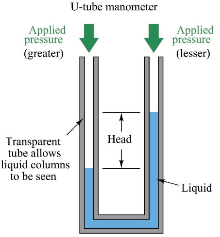
Unequal applied pressures give unequal liquid levels, and the head is read as a vertical distance between the two levels.
الرسم ده شبه الرسم اللي فات بس بعرض مختلف شوية: الضغط الأكبر على اليسار والأقل على اليمين، والـ Head هو فرق الارتفاع الرأسي بين مستويي السائل.
المعادلة دي بالشكل ده تنطبق على ترتيب المانومتر الموضح في السلايد، مع مراعاة كثافات السوائل ومستوياتها. لو ترتيب السوائل مختلف، لازم نكتب اتزان الضغط وفقًا للرسم بدل ما نستخدم المعادلة آليًا.
المانومتر لا يقيس الضغط من شكل الأنبوبة وحده؛ هو يعتمد على اتزان الضغط ووزن عمود السائل. فرق الضغط هو اللي يحدد فرق المستويات بعد ما السائل يوصل إلى الاتزان.
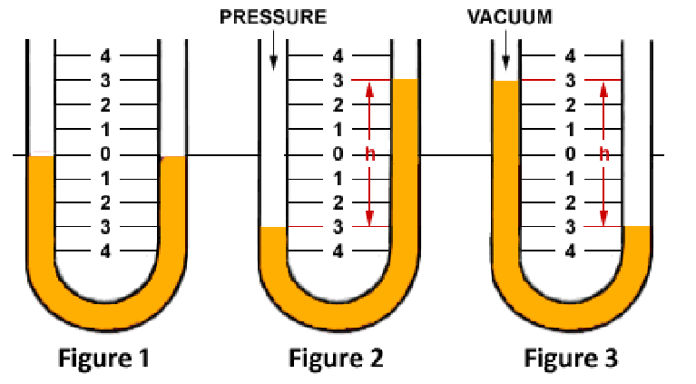
Diagram labelled “Figure 1” in the image: both liquid levels sit at the zero mark. Diagram labelled “Figure 2” (PRESSURE): the levels are displaced, with the level difference marked as h. Diagram labelled “Figure 3” (VACUUM): the displacement is reversed, again with level difference h.
في الرسم المكتوب عليه “Figure 1” جوه الصورة، المستويين عند الصفر يعني مفيش فرق ضغط. في الرسم المكتوب عليه “Figure 2” (PRESSURE) المستوى على جنب نزل والتاني طلع، و\(h\) هي فرق المستويين. في الرسم المكتوب عليه “Figure 3” (VACUUM) الاتجاه بيتعكس. نفس الفكرة: فرق المستويات (\(h\)) مع مرجع الضغط هو اللي بيحدد قراءة الـ gauge pressure أو الـ vacuum.
Does the Liquid Always Move from High Pressure to Low Pressure?
مش كفاية نحفظ الجملة دي ونطبقها من غير ما نفهم الرسم. لما يكون فيه فرق ضغط، السائل بيتحرك نتيجة عدم الاتزان، وتستمر الحركة لحد ما يتحقق الاتزان الهيدروستاتيكي في حالة القياس الساكنة.
عشان نحدد أي ضغط أكبر في المانومتر، بنحلل مستويات السائل وكثافاته ونوازن الضغط عند نقاط مناسبة. ما ينفعش نحدد إن الضغط عند النقطة الأولى أكبر لمجرد إننا شايفين مستوى معين أعلى أو أقل، من غير ما نعرف نوع السائل وترتيب الأعمدة.
كمان لازم نفرّق بين حركة السائل داخل المانومتر بسبب فرق الضغط وبين اتجاه حركة المائع داخل ماسورة. دول مش نفس السؤال.
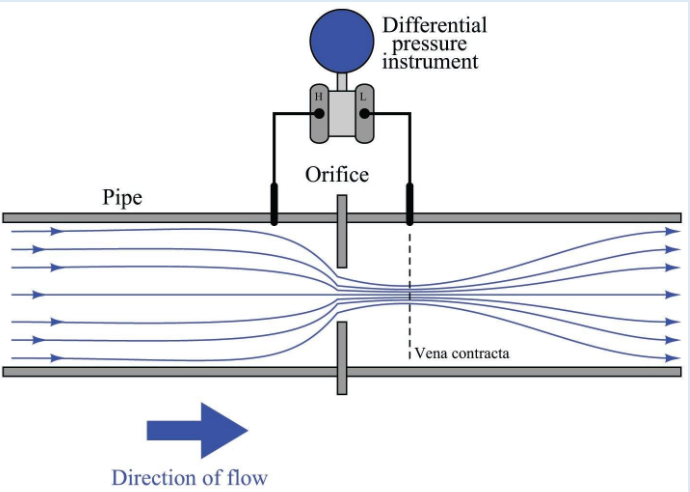
Fluid flows through a pipe past an orifice; one tap upstream and one tap near the vena contracta feed the H and L ports of a differential pressure instrument.
الرسم بيوضح الفرق بين اتجاه جريان المائع في الماسورة (Direction of flow) وحركة السائل جوه جهاز قياس فرق الضغط. الجهاز متوصل بنقطتين على جانبي الـ Orifice (طرف H وطرف L).
Memorizing that statement is not enough. A pressure difference causes liquid motion because the system is out of balance, and the motion continues until hydrostatic equilibrium is reached in the static measurement case. To decide which pressure is larger, analyse the liquid levels, the densities and the arrangement of the columns, and balance the pressures at suitable points. Also distinguish the liquid motion inside the manometer from the direction of the fluid flow inside a pipe.
يعني ما نحكمش على أي ضغط أكبر من منسوب واحد بس؛ لازم نعرف نوع السائل وترتيب الأعمدة ونكتب اتزان الضغط.
Static, Dynamic and Total Pressure
ظهر في التسجيل نقاش عن الضغط الساكن والضغط الكلي وسرعة المائع، لكن التفريغ الصوتي مش واضح بما يكفي لتحديد كل تفاصيل الرسم أو المثال اللي كان بيتناقش. لذلك، المفاهيم الأساسية المرتبطة بالمصطلحات دي هي:
هو الضغط الساكن للمائع عند النقطة. في مسائل الجريان، ده الضغط اللي بنربطه بحالة المائع عند النقطة، وليس بمجرد سرعة الجريان وحدها.
حيث \(\rho\) كثافة المائع و\(V\) سرعته.
أي إن الضغط الكلي هنا يساوي الضغط الساكن مضافًا إليه ضغط الحركة.
العلاقة السابقة تخص الشروط المذكورة، وليست قاعدة نستخدمها دون مراعاة فرق الارتفاع وفواقد الطاقة. كما أن الجزء الصوتي المتعلق بالمثال غير واضح، فمش مؤكد إن التسجيل كان بيطلب تطبيق هذه المعادلة تحديدًا على رسم معين.
Errors in Manometer Measurements — Slide Discussion
من النقاط الأساسية في السلايد والتسجيل إن قراءة فرق الضغط تعتمد على دقة قياس \(h\)، وعلى صحة تركيب الجهاز وخواص السائل.
A. Parallax Error
الـ Parallax Error هو خطأ في قراءة موضع مستوى السائل بسبب زاوية النظر. لو عينك مش في الموضع المناسب بالنسبة للتدريج ومستوى السائل، ممكن تقرأ ارتفاعًا مختلفًا عن الارتفاع الحقيقي. لتقليل الخطأ، اقرأ مستوى السائل من زاوية النظر الصحيحة، وانتبه لطريقة تحديد مستوى السائل في الأنبوبة.
B. Tube Not Perfectly Vertical
لو أنبوبة المانومتر المفروض تكون رأسية لكنها مائلة، فالقراءة المقاسة على امتداد الأنبوبة لا تساوي بالضرورة الارتفاع الرأسي \(h\) المطلوب في معادلة الضغط. الضغط الهيدروستاتيكي يعتمد على الارتفاع الرأسي، وليس طول المسار المائل.
C. Density Changes with Temperature
السلايد يوضح العلاقة:
أي إن كثافة السائل تعتمد على درجة الحرارة. لو درجة الحرارة اتغيرت، كثافة السائل ممكن تتغير، وده يؤثر على علاقة فرق الضغط بفرق الارتفاع. مثلًا، لو استخدمنا كثافة اسمية أو قيمة محسوبة عند درجة حرارة مختلفة عن درجة حرارة التجربة، فالحساب ممكن ينتج عنه خطأ منتظم.
D. Random Error vs. Systematic Error
مثل اختلاف قراءة مستوى السائل قليلًا بسبب صعوبة تحديده بدقة.
مثل تركيب الأنبوبة بزاوية غير صحيحة، أو استخدام قيمة غير مناسبة للكثافة في الحساب.
لو الخطأ ثابت الاتجاه، تكرار القياس وحده مش كفاية لإزالته. لازم نحدد سببه ونعالجه.
Choosing the Manometric Fluid — Slide Discussion
السلايد يوضح إنه عند قياس Small Pressure Differences يمكن استخدام سائل مانومتري منخفض الكثافة. من العلاقة:
نلاحظ إنه عند ثبات فرق الضغط والجاذبية وكثافة السائل الآخر، فإن تقليل فرق الكثافة المناسب في المعادلة يؤدي إلى زيادة فرق الارتفاع المطلوب لتحقيق نفس فرق الضغط.
لكن اختيار السائل مش معناه إننا نختار أقل كثافة ممكنة من غير شروط؛ لازم نراعي السوائل الموجودة في الجهاز، ومدى الضغط المطلوب قياسه، وإمكانية الحصول على قراءة واضحة.
Not necessarily. Even after choosing a suitable manometric fluid, the level difference may remain small and difficult to read. This is why designs that make small changes easier to observe are used, such as the Inclined Manometer.
يعني مش بالضرورة؛ حتى بعد اختيار سائل مناسب ممكن فرق الارتفاع يفضل صغير وصعب القراءة، وده سبب الانتقال للـ Inclined Manometer.
Inclined Manometer
الـ Inclined Manometer هو مانومتر تكون أنبوبة القراءة فيه مائلة بدلًا من رأسية. الغرض الأساسي منه هو Increase the Sensitivity، أي زيادة مقدار الحركة المقروءة على التدريج مقابل تغير صغير في الضغط.
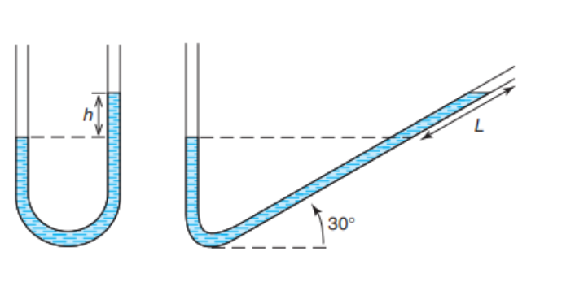
In the inclined limb, the reading length L is measured along the tube at an angle (shown as 30°), while the vertical head h is its vertical component.
على الشمال U-tube عادي والارتفاع \(h\) رأسي. على اليمين الأنبوبة مائلة بزاوية 30°، والمسافة \(L\) على امتداد الأنبوبة أكبر من الارتفاع الرأسي المقابل لها.
Geometric Relation
- \(L\): length of the movement read along the tube.
- \(h\): the corresponding vertical height.
- \(\theta\): inclination angle of the tube relative to the horizontal.
وبالتالي، في حالة المانومتر اللي تنطبق عليه علاقة فرق الكثافة السابقة:
إذن القراءة \(L\) ليست هي نفسها الارتفاع الرأسي \(h\). لازم نحوّل القراءة إلى ارتفاع رأسي قبل استخدامها في معادلة الضغط.
Why Does Inclination Increase the Sensitivity?
عند الزوايا الصغيرة، تكون المسافة المقروءة على امتداد الأنبوبة أكبر من الارتفاع الرأسي المقابل لها. لذلك يصبح تغير مستوى السائل أسهل في الملاحظة عند قياس فروق ضغط صغيرة. لكن لازم نعرف زاوية الميل بدقة؛ لأن الخطأ في \(\theta\) ينتقل إلى حساب \(h\)، ثم إلى حساب فرق الضغط.
To increase sensitivity when measuring small pressure differences.
No. It improves the readability of small movements, but it does not remove reading error or the error in measuring the angle. The inclination angle itself can be a source of systematic error if the value used in the calculation is incorrect.
لأ، الأنبوبة المائلة بتحسّن قابلية قراءة الحركة الصغيرة بس، لكن مش بتلغي خطأ القراءة ولا خطأ قياس الزاوية.
Well-Type and Inclined Well-Type Manometers
Well-Type Manometer
السلايد التالي بيطرح مشكلة مختلفة: في بعض تصميمات المانومتر، لازم نقرأ مستويين مختلفين للسائل عشان نحسب \(h\). لو القراءة الأولى \(h_1\) والقراءة الثانية \(h_2\)، فإن فرق الارتفاع يُحدد من موضعي المستويين وفقًا لتعريفهما في الرسم. وفي الحالة الشائعة:
قراءة مستويين تعني وجود قراءتين يمكن أن تدخل أخطاؤهما في حساب فرق الارتفاع.
How Does the Well-Type Manometer Solve the Problem?
الـ Well-Type Manometer يحتوي على خزان أو وعاء (Well / Reservoir) كبير نسبيًا متصل بأنبوبة قياس. طبقًا للسلايد، يُصمَّم الـ Well بحيث يكون تغير مستوى السائل فيه مهملًا تقريبًا، أو يكون التدريج معوّضًا عن التغير في مستوى السائل داخل الخزان.
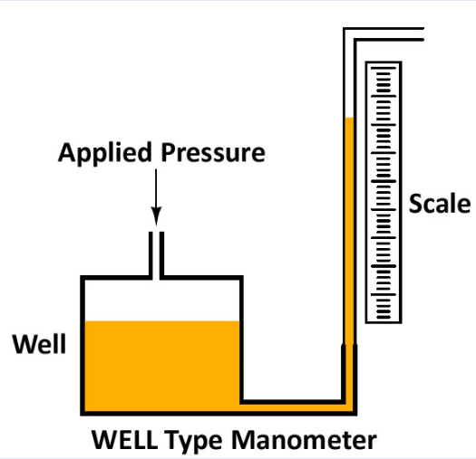
A large well receives the applied pressure and connects to a narrow vertical measuring tube beside a graduated scale.
الـ Well (الخزان) واسع ومتوصل بالضغط المطبّق، وبعدين أنبوبة رفيعة جنبها Scale. لما الضغط يتغير بيتحرك السائل في الأنبوبة الرفيعة حركة واضحة، ومستوى الـ Well بيتغير بمقدار صغير.
الفكرة إن مساحة مقطع الـ Well تكون كبيرة مقارنة بمساحة مقطع أنبوبة المؤشر، وبالتالي فإن تغير مستوى السائل في الـ Well يكون صغيرًا نسبيًا عند انتقال كمية من السائل إلى الأنبوبة أو منها. ده يسمح باستخدام قراءة الأنبوبة مع إهمال تغير مستوى الـ Well في حالة التصميم المناسب، أو استخدام تدريج يعوّض هذا التغير.
لازم نراعي قطر الـ Well، وكذلك زاوية المؤشر، التي يوضح السلايد أنها \(90^\circ\) في التصميم المعروض. أي إن هندسة الجهاز والتدريج جزء من صحة القراءة، وليست مجرد تفاصيل شكلية.
Does the Well-Type Improve Sensitivity or Accuracy?
السؤال ده مهم لأنهم مش نفس الخاصية:
- Sensitivity (الحساسية): مقدار التغير في القراءة الناتج عن تغير صغير في الكمية المقاسة.
- Accuracy (الدقة): مدى قرب القراءة من القيمة الحقيقية.
فكرة الـ Well-Type الأساسية في السلايد هي التغلب على الحاجة لقراءة مستويين، بجعل تغير مستوى الخزان مهملًا أو تعويضه في التدريج. ده يبسط تحديد الارتفاع، وقد يقلل بعض أخطاء القراءة، لكنه لا يضمن وحده زيادة الـ Sensitivity أو إزالة جميع الأخطاء. أما الـ Inclined Manometer، فالسلايد يذكر صراحةً أنه يُستخدم لزيادة الـ Sensitivity.
Inclined Well-Type Manometer
السلايد يوضح أن Inclined Well-Type Manometers يمكن استخدامها أيضًا. التصميم يجمع بين فكرتين:
- استخدام الـ Well لتقليل تأثير تغير مستوى السائل داخل الخزان على القراءة أو تعويضه في التدريج.
- استخدام الأنبوبة المائلة لزيادة الحركة المقروءة مقابل تغير صغير في الضغط.
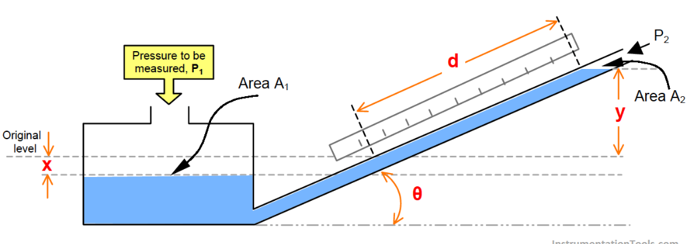
The pressure to be measured, P1, acts on the large reservoir (area A1); the other end of the inclined tube (area A2) is at P2. The figure marks the reservoir level change x from the original level, the reading d along the graduated inclined tube, the vertical rise y, and the angle θ.
الرسم بيجمع الفكرتين: الخزان الكبير (المساحة \(A_1\)) والأنبوبة المائلة (المساحة \(A_2\)). الـ \(x\) هو تغير مستوى الخزان عن المستوى الأصلي، والـ \(d\) القراءة على امتداد الأنبوبة، والـ \(y\) الارتفاع الرأسي، و\(\theta\) زاوية الميل.
وبالتالي، لازم عند التعامل مع الجهاز نراعي هندسة الـ Well وزاوية الأنبوبة، ونستخدم العلاقة الهندسية الصحيحة لتحويل القراءة إلى الارتفاع الرأسي المناسب.
To reduce the effect of reservoir-level change on the reading, or compensate for it through the scale.
Its main idea is to avoid reading two levels by making the reservoir-level change negligible or compensating for it in the scale. This simplifies determining the height and may reduce some reading errors, but it does not by itself guarantee higher Sensitivity or remove all errors. The Inclined Manometer is the design the slide states is used to increase Sensitivity.
Sensitivity, Accuracy and Design Purpose
بعد ما فهمنا الـ Inclined Manometer والـ Well-Type Manometer، لازم نميّز بين الهدف من كل تصميم، وده كان محور أسئلة المقارنة في المناقشة.
A. Sensitivity vs. Accuracy
في سياق المانومتر، نقدر نفهمها على إنها مقدار التغير في القراءة الناتج عن تغير صغير في الضغط.
يعني ممكن جهاز يكون حساسًا جدًا للتغيرات الصغيرة، لكن قراءته لا تكون دقيقة لو فيه خطأ في المعايرة أو تركيب الجهاز.
B. What Is the Purpose of an Inclined Manometer?
الـ Inclined Manometer بيزود الـ Sensitivity؛ لأن تغيرًا صغيرًا في الضغط يمكن أن ينتج عنه حركة واضحة على طول الأنبوبة المائلة. من العلاقة الهندسية:
حيث \(L\) طول الحركة على الأنبوبة، و\(h\) الارتفاع الرأسي، و\(\theta\) زاوية الميل بالنسبة للأفقي. عند الزوايا الصغيرة، يمكن أن تكون الحركة \(L\) كبيرة نسبيًا مقارنةً بالارتفاع الرأسي \(h\). وده يسهل ملاحظة فروق الضغط الصغيرة.
C. What Is the Purpose of a Well-Type Manometer?
الـ Well-Type Manometer بيعالج مشكلة مختلفة: بدل ما نعتمد على قياس تغير مستويين من السائل بشكل مستقل، بيكون فيه خزان أو Well مساحة مقطعه كبيرة مقارنةً بمساحة مقطع أنبوبة القراءة. بالتالي، لما السائل يتحرك من الخزان إلى الأنبوبة أو العكس، يتغير مستوى السائل في الخزان بمقدار صغير نسبيًا. في التصميم المناسب، يمكن إهمال هذا التغير تقريبًا أو تعويضه عن طريق تدريج الجهاز. الهدف هنا هو تسهيل قراءة فرق الارتفاع وتقليل الاعتماد على قراءة مستويين منفصلين.
No. The inclined manometer improves the observability of small changes, but if the inclination angle is not set correctly or the reading itself is inaccurate, an error can remain in the result.
وبالتالي التصميم المائل له ميزة مرتبطة بالـ Sensitivity، لكنه يضيف ضرورة الاهتمام بقياس زاوية الميل.
Not necessarily.
- The Inclined Manometer mainly aims to increase Sensitivity.
- The Well-Type Manometer uses a large reservoir to reduce the effect of its level change on the reading, or to compensate for that change in the scale.
- The Inclined Well-Type Manometer combines both ideas, taking the reservoir geometry and the angle of the reading tube into account.
في التصميم الموضح في السلايد، لازم نراعي زاوية الأنبوبة والتدريج، بما في ذلك الزاوية القائمة (\(90^\circ\)) المشار إليها في الرسم. لا يصح افتراض أن كل تصميم Well-Type له نفس الهندسة من غير الرجوع إلى الرسم.
Advantages and Limitations of Manometers
قبل الانتقال إلى أجهزة القياس الأخرى، لازم نعرف إمتى يكون المانومتر اختيارًا مناسبًا، وإمتى تظهر حدوده.
Advantages
- Simple: مبدأ العمل بسيط؛ لأنه يعتمد على اتزان الضغط ووزن عمود السائل.
- Inexpensive: تكلفته منخفضة نسبيًا، وممكن تنفيذ قياس الضغط باستخدام أنبوبة وسائل مناسبين من غير نظام إلكتروني معقد.
- Can be highly sensitive: بعض تصميماته، خصوصًا الـ Inclined Manometer، تقدر تُظهر فروق الضغط الصغيرة بوضوح.
Limitations
- Poor Dynamic Response: الاستجابة للتغيرات السريعة في الضغط ضعيفة نسبيًا؛ لأن السائل يحتاج وقتًا ليتحرك ويصل إلى حالة اتزان جديدة. لو الضغط بيتغير بسرعة كبيرة، ممكن قراءة مستوى السائل ما تلحقش التغير الفعلي لحظة بلحظة.
- No Remote Sensing: في الاستخدام المعتاد، لازم يكون فيه اتصال مادي بين المانومتر والنقطة المراد قياس الضغط عندها. لذلك لا يوفر ميزة القياس عن بُعد بالطريقة المتاحة في أنظمة الاستشعار المناسبة (أجهزة القياس الإلكترونية).
- Limited Pressure Range: ارتفاع عمود السائل المطلوب لموازنة الضغط بيزيد كلما زاد فرق الضغط. وده يفرض حدودًا عملية على أبعاد الجهاز واستخدامه. السلايد يذكر أن مدى الضغط العملي للمانومترات يكون عادةً في حدود لا تتجاوز \(7\ \text{bar}\). دي معلومة مرتبطة بالنطاق العملي المذكور في المحاضرة، وليست حدًا مطلقًا لكل تصميم مانومتر.
إذن المانومتر مناسب عندما تكون بساطة القياس وتكلفته وانخفاض فرق الضغط عوامل مهمة، لكنه ليس الاختيار الأفضل لكل مدى ضغط أو لكل قياس سريع.
Because the pressure difference is related to the height of the liquid column:
لما الضغط يزيد، ممكن نحتاج عمود سائل أطول، وده يخلي الجهاز كبير وغير عملي. اختيار سائل أعلى كثافة قد يقلل الارتفاع المطلوب، لكن لا يلغي كل القيود العملية.
Dead Weight Tester
بعد أجهزة القياس المعتمدة على أعمدة السوائل، ننتقل إلى جهاز يُستخدم أساسًا في Pressure Calibration (معايرة الضغط)، وهو الـ Dead Weight Tester.
Principle of Operation
الـ Dead Weight Tester جهاز يُستخدم لمعايرة أجهزة قياس الضغط والتحقق من صحة قراءاتها. فكرته إنه يولّد ضغطًا مرجعيًا من قوة معلومة تؤثر على مساحة معلومة.
يتكون النظام المعتاد من:
- Piston and Cylinder: مكبس وأسطوانة.
- Known Masses / Weights: أوزان معلومة توضع على المكبس.
- Pressure Fluid: سائل ينقل الضغط داخل النظام.
- Test Gauge: جهاز الضغط المراد معايرته.
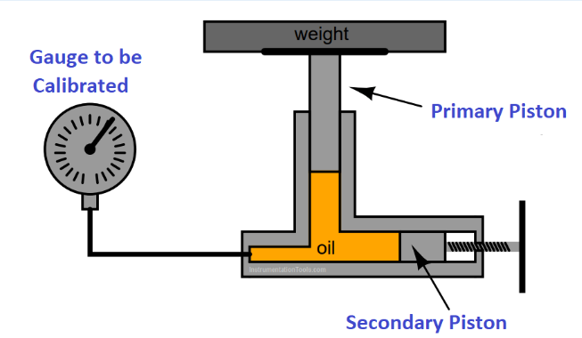
Known weights load the primary piston; the pressure is transmitted through the oil to the gauge to be calibrated. The figure also shows a secondary piston at the oil chamber; its function is not described in the lecture text, so it is not elaborated here.
الوزن (weight) بيتحط على الـ Primary Piston، والزيت (oil) بينقل الضغط للـ Gauge to be Calibrated. الضغط المرجعي بيتحسب من القوة ÷ المساحة.
عند وضع أوزان معلومة على المكبس، تؤثر الجاذبية بقوة على مساحة المكبس. الضغط النظري الناتج يُحسب من القوة مقسومة على المساحة.
Governing Equations
القوة الناتجة عن كتلة معلومة:
والضغط:
إذن:
- \(p\): الضغط المرجعي (reference pressure).
- \(m\): الكتلة الكلية للأوزان المؤثرة.
- \(g\): عجلة الجاذبية.
- \(A\): مساحة المقطع الفعالة للمكبس (effective area).
المعادلة دي بتوضح المبدأ الأساسي. أما الحساب الدقيق في التطبيق العملي، فقد يحتاج إلى مراعاة عوامل المعايرة والتصميم الخاصة بالجهاز، مثل المساحة الفعالة وظروف التشغيل.
Calibration Procedure
لما نكون عايزين نعاير جهاز ضغط:
- نوصل الجهاز المراد اختباره بالـ Dead Weight Tester.
- نختار أوزانًا معلومة ونضعها على المكبس.
- نحسب الضغط المرجعي المتوقع باستخدام القوة والمساحة.
- نقارن قراءة جهاز الضغط بالقيمة المرجعية.
- نكرر العملية عند قيم ضغط مختلفة ضمن نطاق المعايرة المطلوب.
لو قراءة الجهاز مختلفة عن الضغط المرجعي، نقدر نحدد مقدار الخطأ عند نقطة المعايرة.
Advantages
- High Accuracy: يمكن الحصول على ضغط مرجعي دقيق عند استخدام الجهاز بطريقة صحيحة ومعرفة المساحة الفعالة.
- Suitable for Calibration: مناسب لمعايرة أجهزة قياس الضغط والتحقق من قراءاتها.
- Wide Usable Pressure Range: يمكن اختيار أوزان مناسبة لتوليد مستويات ضغط مختلفة ضمن نطاق تصميم الجهاز.
Limitations
- Static Calibration: الـ Dead Weight Tester مناسب أساسًا لمعايرة الضغط في ظروف ساكنة أو شبه ساكنة. لا يُستخدم عادةً لتتبع تغيرات الضغط السريعة لحظة بلحظة.
- Gravity and Area Dependence: الحساب يعتمد على \(g\) والمساحة الفعالة \(A\)، ولذلك فإن دقة هذه القيم تؤثر في الضغط المرجعي المحسوب.
- Practical Pressure Limits: نطاق الضغط المتاح يعتمد على تصميم الجهاز، ومساحة المكبس، والأوزان التي يمكن استخدامها بأمان. لا يصح افتراض أن كل Dead Weight Tester يصل إلى نفس أقصى ضغط.
It generates a reference pressure from a known force acting on a known effective area:
Because the aim is to obtain a reference pressure that can be calculated from known quantities and then used to compare against the reading of the instrument under test. If the instrument's own reading were used to decide the correct pressure, the required independent calibration would not have been achieved.
الهدف إننا نجيب ضغط مرجعي نحسبه من كميات معلومة، وبعدين نقارن بيه قراءة الجهاز اللي بنختبره.
Mechanical Methods of Pressure Measurement
بعد الـ Dead Weight Tester، ننتقل إلى عائلة أخرى من أجهزة القياس: Mechanical Pressure Measurement Devices. الفكرة الأساسية إن الضغط يؤثر على عنصر ميكانيكي قابل للتشوه المرن (Elastic Element). هذا التشوه ينتج عنه إزاحة أو حركة ميكانيكية يمكن ربطها بقراءة الضغط.
المبدأ العام:
يعني الضغط نفسه لا يتحول مباشرةً إلى رقم على التدريج؛ بل يسبب تشوهًا في العنصر الحساس، ثم تنتقل الحركة إلى مؤشر أو آلية أخرى تعرض القراءة.
من أمثلة العناصر الميكانيكية التي تتعامل مع الضغط: Bourdon Tube، Diaphragm، Bellows. كل واحد منها يستخدم شكلًا ميكانيكيًا مختلفًا لتحقيق استجابة للضغط.
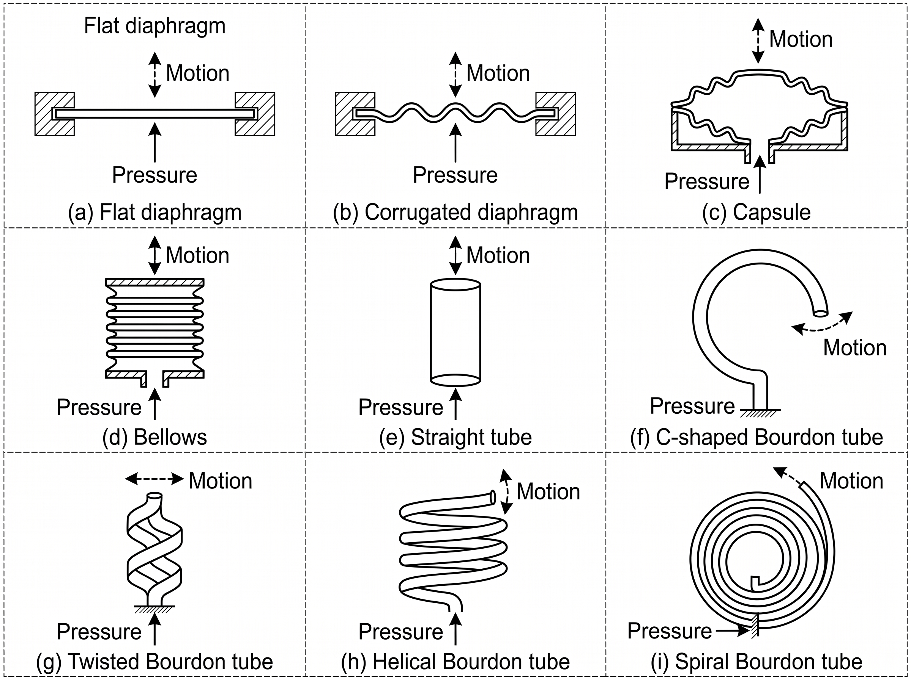
(a) Flat diaphragm, (b) Corrugated diaphragm, (c) Capsule, (d) Bellows, (e) Straight tube, (f) C-shaped Bourdon tube, (g) Twisted Bourdon tube, (h) Helical Bourdon tube, (i) Spiral Bourdon tube. Each panel shows the applied pressure and the resulting motion.
الشكل بيقارن أشكال العناصر المرنة: diaphragm (مسطح ومموّج)، capsule، bellows، أنبوبة مستقيمة، وأنواع Bourdon tube (C-shaped وtwisted وhelical وspiral). في كل شكل بتشوف اتجاه الضغط واتجاه الحركة (Motion) الناتجة.
Why Must the Element Be Elastic?
لازم العنصر يرجع تقريبًا إلى شكله الأصلي لما الضغط يتشال، طالما إنه اشتغل داخل حدود التصميم. لو الضغط سبب تشوهًا دائمًا (Plastic Deformation)، فلن تعود العلاقة بين الضغط والإزاحة كما كانت، وده يؤدي إلى خطأ في القراءة وقد يسبب تلف العنصر.
لذلك لازم نراعي Elastic Limit، أي الحد الذي يمكن عنده للعنصر أن يتحمل التشوه ويرجع إلى حالته الأصلية من غير تشوه دائم.
To avoid permanent deformation that can affect the pressure-to-displacement relationship and cause measurement errors.
Bourdon Tube
الـ Bourdon Tube من أشهر عناصر قياس الضغط الميكانيكية.
Construction
هو أنبوب مرن، غالبًا يكون منحنيًا، ومقطعه غير دائري تمامًا. أحد طرفيه متصل بالضغط المراد قياسه، بينما الطرف الآخر يكون مغلقًا ومتاحًا له التحرك ميكانيكيًا. تُوصل حركة الطرف المتحرك بآلية ميكانيكية مثل Linkage وPointer لعرض القراءة على تدريج.
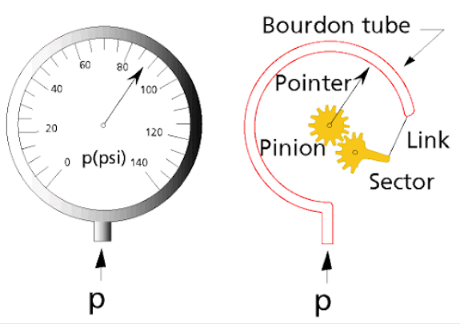
The pressure p enters the curved Bourdon tube; its free end is attached through a link to a sector gear, which turns the pinion and the pointer over a scale in psi.
الضغط \(p\) بيدخل الأنبوبة المنحنية، فالطرف الحر بيتحرك، والـ Link بيحرّك الـ Sector، والـ Sector بيلف الـ Pinion اللي عليه الـ Pointer، فالمؤشر بيتحرك على التدريج.
Working Principle
عندما يدخل الضغط إلى الأنبوبة، تتعرض جدرانها لتأثير الضغط الداخلي، فيتغير شكل الأنبوبة المنحنية قليلًا، وينتج عن ذلك تحرك الطرف الحر. الحركة تنتقل إلى المؤشر من خلال آلية الربط الميكانيكية، فتظهر قراءة الضغط على التدريج. إذن:
في النطاق التشغيلي المناسب، يمكن معايرة المؤشر بحيث ترتبط حركته بقيمة الضغط.
Static Characteristics
الـ Static Characteristics (الخصائص الساكنة) هي الخصائص المرتبطة بسلوك الجهاز عندما يكون الضغط ثابتًا أو يتغير ببطء بما يسمح بالاستقرار. من المهم مراعاة العلاقة بين الضغط والإزاحة، ومدى تكرار القراءة عند نفس الضغط، وحدود التشوه المرن. في النطاق المناسب، يمكن تقريب العلاقة بين الضغط والإزاحة بخط مستقيم إذا كان ذلك مدعومًا بمعايرة الجهاز، لكن لا يجب افتراض الخطية التامة لكل Bourdon Tube وفي كل نطاق.
Why Must the Tube Remain Elastic?
لو زاد الضغط عن الحد المسموح، ممكن يحصل تشوه دائم في الأنبوبة. عندها قد لا يرجع المؤشر إلى موضعه الأصلي بعد إزالة الضغط، وتصبح القراءة غير صحيحة. لهذا السبب، يجب اختيار الجهاز ضمن نطاق الضغط المصمم له، وتجنب تحميله بما يتجاوز حدوده.
Advantages
- تصميم ميكانيكي عملي وشائع.
- يمكنه قياس نطاقات ضغط مناسبة لتصميمه.
- لا يحتاج بالضرورة إلى دائرة كهربائية لإظهار القراءة؛ إذ يمكن عرض الضغط مباشرةً بمؤشر ميكانيكي.
Limitations
- يعتمد على التشوه الميكانيكي، لذلك له حدود مرتبطة بالمرونة والتعب الميكانيكي (mechanical fatigue).
- قد يتأثر بالأخطاء الميكانيكية أو تغير خصائص العنصر مع الاستخدام.
- الاستجابة للتغيرات السريعة تعتمد على التصميم والكتلة والآلية الميكانيكية، ولا ينبغي افتراض أنه مناسب لكل تغير ديناميكي سريع.
Diaphragm Pressure Sensor
الـ Diaphragm هو عنصر مرن رقيق يفصل بين منطقتين، ويمكن أن ينحني عند وجود فرق ضغط عبره.
Construction and Working Principle
عندما يؤثر الضغط على أحد جانبي الـ Diaphragm، ويتوفر ضغط مرجعي أو ضغط مختلف على الجانب الآخر، يتولد فرق ضغط يؤدي إلى انحناء العنصر. مقدار الانحناء يعتمد على فرق الضغط، وخواص المادة، وسُمك العنصر، وشكله، وطريقة تثبيته. يمكن استخدام الإزاحة الناتجة في تحريك مؤشر ميكانيكي أو ربطها بوسيلة تحويل مناسبة.
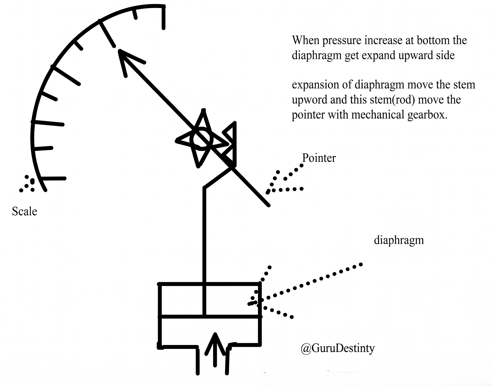
As printed on the figure: when pressure increases at the bottom, the diaphragm expands toward the upper side; the expansion moves the stem (rod) upward, and the stem moves the pointer through a mechanical gearbox over the scale.
لما الضغط يزيد من تحت، الـ Diaphragm بينتفخ لفوق، فالـ Stem (القضيب) بيطلع لفوق وبيحرّك الـ Pointer عن طريق Mechanical Gearbox على الـ Scale.
الاستجابة الأساسية للـ Diaphragm ترتبط بفرق الضغط عبره. لذلك، عند تحديد الضغط الذي يقيسه، يجب معرفة ما إذا كان الجانب الآخر معرضًا للضغط الجوي أو لضغط آخر.
Why Is the Diaphragm Shape Important?
شكل العنصر وأبعاده وخواص مادته تؤثر على مرونته وعلى مقدار الإزاحة الناتجة من الضغط. تغيير التصميم يمكن أن يغيّر الحساسية ونطاق القياس. لذلك لا يكفي أن نقول إن كل Diaphragm له نفس الحساسية أو نفس مجال الضغط.
Elastic Limit
مثل الـ Bourdon Tube، يجب ألا يتجاوز العنصر حدود التشوه المرن. لو حدث تشوه دائم، قد لا يعود إلى موضعه الأصلي، وبالتالي تصبح علاقة الضغط بالإزاحة غير دقيقة.
Bellows Pressure Sensor
الـ Bellows عنصر مرن يشبه الأنبوبة ذات الطيات أو التموجات المتتابعة.
Construction and Working Principle
عندما يؤثر الضغط داخل الـ Bellows أو خارجه، ينتج فرق ضغط يؤدي إلى تغير طوله، أي إنه يتمدد أو ينكمش بحسب اتجاه الضغط وترتيب الجهاز. يمكن ربط الحركة الطولية بآلية ميكانيكية لتحريك مؤشر أو نقل الإزاحة إلى عنصر آخر. بالتالي:
في النظام المعتاد، يمكن استخدام هذه الحركة لقياس الضغط أو فرق الضغط حسب طريقة توصيل الجهاز.
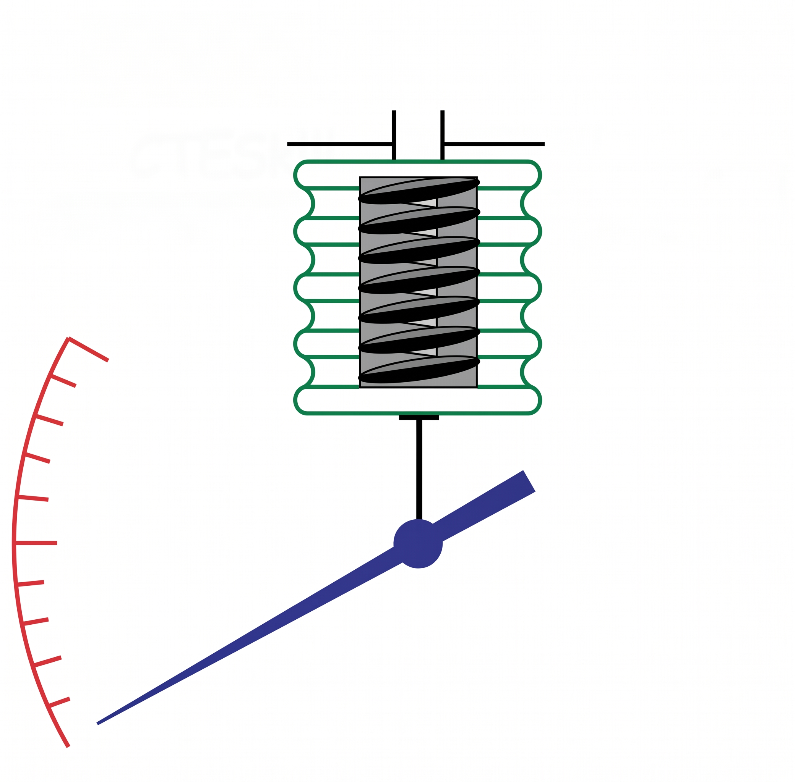
A corrugated bellows, drawn with a coil spring inside it, moves a rod connected to a pointer that sweeps over a scale.
الـ Bellows المموّج بيتمدد أو بينكمش مع الضغط، وحركته بتنتقل بقضيب للـ Pointer على الـ Scale. الرسم بيوضح كمان زنبرك جوه الـ Bellows، لكن نص المحاضرة مش بيشرح دوره.
Why Does the Bellows Have Folds?
الطيات تسمح للعنصر بالتغير في طوله تحت تأثير الضغط. لكن شكل الطيات وعددها وأبعادها وخواص المادة تؤثر جميعها في مقدار الحركة والاستجابة. لذلك، اختلاف تصميم الـ Bellows يمكن أن يؤدي إلى اختلاف الحساسية ونطاق الضغط.
Limitations
الـ Bellows عنصر ميكانيكي مرن، ولذلك يجب مراعاة حدوده الميكانيكية وخصائصه الديناميكية. لا يصح افتراض أنه مناسب تلقائيًا للضغط المتغير بسرعة لمجرد أنه متصل بمؤشر أو بدائرة كهربائية.
They use different elastic geometries to produce mechanical displacement under pressure: a curved tube, a flexible membrane, and a folded expandable element, respectively.
التلاتة بيحوّلوا الضغط لحركة ميكانيكية، بس بأشكال مرنة مختلفة: أنبوبة منحنية (Bourdon Tube)، وغشاء مرن (Diaphragm)، وعنصر مطوي قابل للتمدد (Bellows).
Mechanical Displacement and Electrical Measurement
في بعض الأنظمة، لا تُستخدم حركة الـ Bourdon Tube أو الـ Diaphragm أو الـ Bellows لتحريك مؤشر فقط، بل يمكن نقل الإزاحة إلى عنصر كهربائي. مثلًا، يمكن أن تؤدي الحركة الميكانيكية إلى تحريك جزء في Resistive Sensor، فتتغير المقاومة الكهربائية. بعد ذلك يمكن قياس التغير الكهربائي وربطه بالضغط بعد المعايرة. التسلسل هنا يكون:
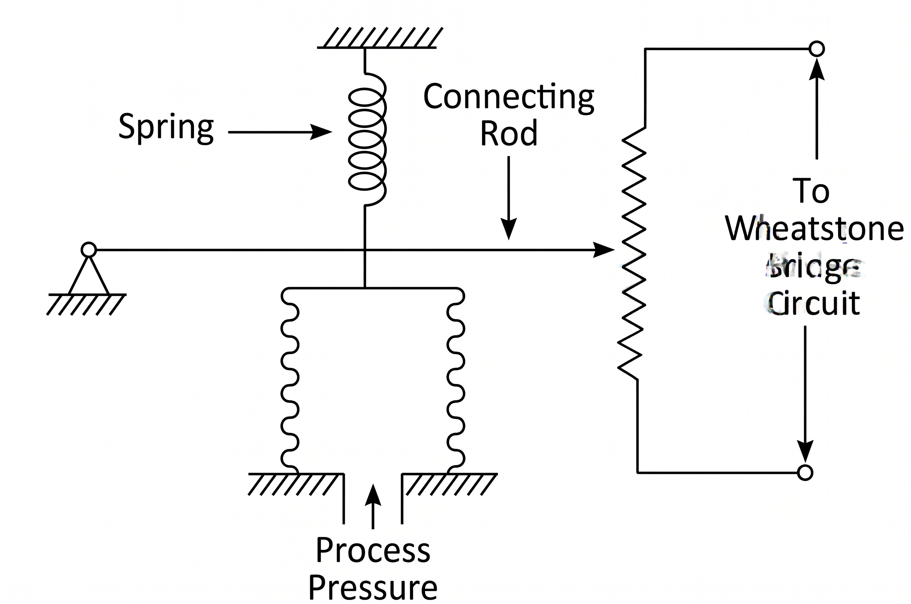
Process pressure acts on the elastic element at the bottom; a connecting rod with an attached spring moves along a resistive element whose terminals go to a Wheatstone bridge circuit.
الضغط (Process Pressure) بيحرّك العنصر المرن، والـ Connecting Rod بيحرّك نقطة التلامس على مقاومة (resistive element)، والمقاومة دي متوصلة بدائرة Wheatstone Bridge. يعني الإزاحة الميكانيكية اتحولت لتغير كهربائي. العنصر المرسوم بجدران مموجة؛ ونص المحاضرة بيربط الفكرة بالـ Diaphragm والتحويل الكهربائي من غير تفاصيل أكتر.
لكن وجود خرج كهربائي لا يعني أن الجهاز أصبح خاليًا من القيود الميكانيكية؛ لأن عنصر الاستشعار لا يزال يعتمد على التشوه والحركة. ولهذا السبب، يجب التمييز بين Sensing Element، وهو العنصر الذي يتأثر بالضغط، وبين عنصر تحويل الإزاحة إلى إشارة كهربائية، وبين دائرة معالجة الإشارة.
Static vs. Dynamic Pressure Measurement
من النقاط المهمة في نهاية المناقشة أن أجهزة القياس الميكانيكية التي تعتمد على تشوه عنصر مرن تكون مناسبة غالبًا للضغط الثابت أو المتغير ببطء، بحسب تصميمها. في القياس الديناميكي، الضغط يتغير مع الزمن، ولذلك لا يكفي أن نعرف العلاقة بين الضغط والإزاحة عند الاتزان؛ بل يجب أيضًا معرفة سرعة استجابة الجهاز. لو الضغط اتغير بسرعة أكبر من قدرة العنصر والآلية على الاستجابة، فقد تتأخر القراءة عن القيمة الفعلية.
لذلك، عند اختيار جهاز قياس ضغط، يجب أن نسأل:
- هل المطلوب قياس Static Pressure أم ضغط متغير بسرعة؟
- ما مدى الضغط المتوقع؟
- ما مقدار الدقة المطلوبة؟
- هل نحتاج إلى قراءة ميكانيكية مباشرة أم إشارة كهربائية؟
- هل الجهاز مصمم لتحمل الضغط المطلوب من غير تجاوز حدود العنصر المرن؟
Comparison of Pressure-Measuring Devices
| Device | Main Principle | Typical Purpose | Main Limitation |
|---|---|---|---|
| Manometer | Hydrostatic liquid column | قياس الضغط أو فرق الضغط من فرق الارتفاع | الاستجابة البطيئة نسبيًا والحجم العملي عند الضغوط الكبيرة |
| Dead Weight Tester | Known force divided by effective area | معايرة أجهزة الضغط | مناسب أساسًا للمعايرة الساكنة |
| Bourdon Tube | Deformation of a curved elastic tube | قياس الضغط وتحريك مؤشر ميكانيكي | حدود المرونة والأخطاء الميكانيكية |
| Diaphragm | Deflection of a flexible membrane | قياس الضغط أو فرق الضغط | يتأثر بالتصميم وحدود التشوه المرن |
| Bellows | Expansion or contraction of a folded elastic element | تحويل الضغط إلى إزاحة ميكانيكية | حدود العنصر المرن والاستجابة الديناميكية |
Because a device may measure a steady pressure correctly but fail to follow rapid pressure changes accurately.
يعني الجهاز ممكن يقرا ضغط ثابت صح، لكن لو الضغط اتغير بسرعة القراءة تتأخر عن القيمة الفعلية.